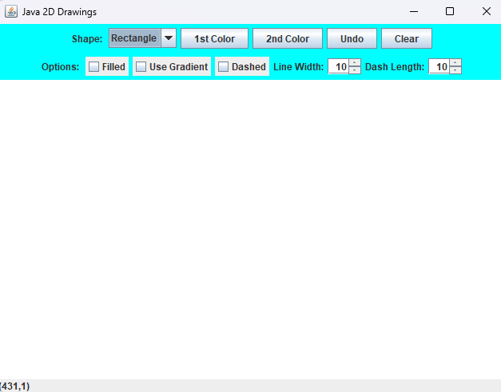
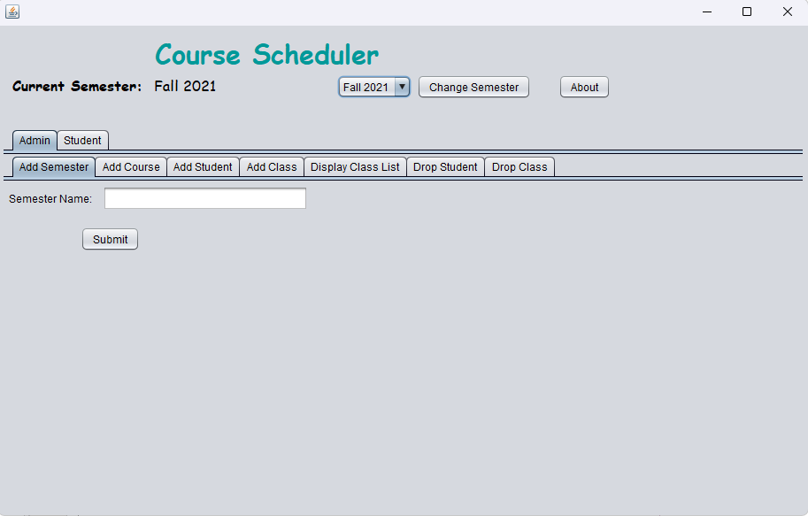

Current student looking to join the workforce to gain real-world experience. Ability to complete tasks on time in both individual and team settings. Dependable and reliable, ready to learn and grow working with companies out in the real world. Looking to advance skills in programming, cybersecurity, and data analytics. Done projects and proficient in Python, Java, SQL, C, Html/CSS
The Pennsylvania State University University Park, PA
Cumulative GPA: 3.90
Deans List: Fall 2022 - Fall 2023
Intended Major: Computer Science Intended Minor: Computer Engineering
Expected Graduation: Spring 2026
Cmpsc 132 (Data Structures), Cmpsc 221 (Object-Oriented Programming with Web Applications, Cmpen 270 (Digital Design: Theory and Practice) Cmpen 331 (Comp Org and Design) Cmpsc 311 (Intro Sys Programming) Cmpsc 360 (Discrete Math) Stat 318( Elementary Probability)
Using a text file, organize every word into an excel file. First column being each distinct word, second being the number of occurrences of that word, third column being what line of the text file that word occurs, and fourth column being what numbers the word appeared in the line
Designed a GUI that allows users to draw different shapes or lines with a variety of functions. Added the ability to draw using different colors to gradients to line and dash length.
Designed and programmed a GUI along with databases that allows users such as administrators and students to perform various tasks related to scheduling courses. Some of the tasks that can be performed are adding a class to a student’s schedule or displaying a student’s schedule or dropping a class.
CMC Analytical Intern June 2022 -August 2022
Server August 2023 - Present